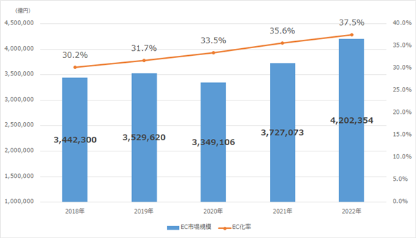
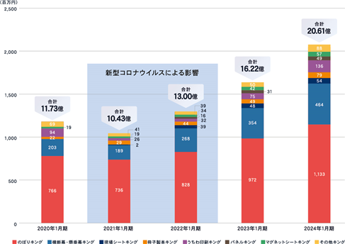
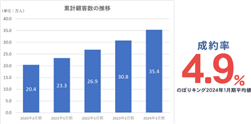
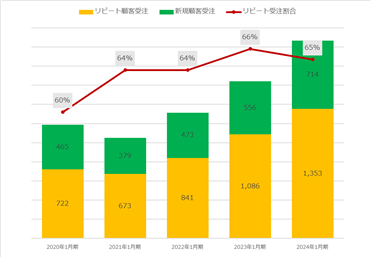
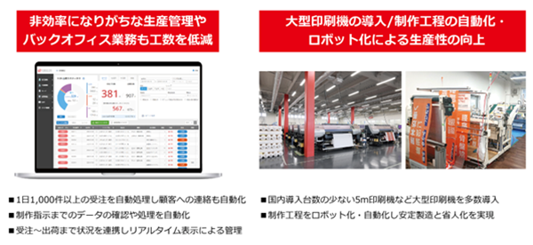

当社の経営方針、経営環境及び対処すべき課題等は、以下のとおりであります。
なお、文中の将来に関する事項は、当事業年度末現在において当社が判断したものであります。
（1）経営方針
当社は、「商売繁盛応援企業、日本一！」を経営ビジョンとして、当社からご提供するSP商材によって顧客に対し、集客の成功、売上アップ、利益率の改善をご提供し続けることで、日本全国の経済活性化に貢献してまいります。また、経営理念として「一、私たちは共に力を合わせ、お客様の繁盛づくりに貢献します。 一、私たちは新たな商品と市場の開拓に挑戦します。 一、私たちは仕事を通じて、自己研鑽を重ね、共に成長し夢を実現します。」を掲げ、顧客、共に働くスタッフ、その家族、取引業者皆様のためにSP商材を通じて繁盛を創造しビジョンの実現に惜しむことなく努力を続けてまいります。
上記経営理念のもと、ネット集客の強化や販売商品のバリエーションを増やすことで新規獲得を図ることに加え、リピート・LTV（Life Time Value：顧客生涯価値）を向上させることが売上拡大に対する有効策となると考えております。全国のお客様へ商売繁盛を届けるため、販促品のEC通販事業に特化し、「商売繁盛応援企業、日本一！」のビジョン実現を目指します。
（2）経営環境
BtoB-EC市場規模全体でみると、新型コロナウイルス感染症の影響で、2020年は334兆9,106億円と前年比5.1％減少しましたが2021年は372兆7,073億円とコロナ前の水準を上回るまで持ち直していることに加え、EC化率も前年から2.1ポイント増の35.6％となっており、2022年もそれぞれさらに増加しております（「BtoB-EC市場規模の推移」参照）。
当社が事業を展開している国内印刷通販市場は、BtoB-EC市場規模全体が伸長していることやEC化率が増加していることを背景に、注文や入稿が手軽にできることから市場規模が成長しています。本市場は、法人企業の販促用途が大部分を占めていることからコロナ禍では一時成長が鈍化したものの、成長が続いております。また、商業印刷市場は2021年に1兆7,800億円、2022年に1兆7,750億円（株式会社電通 2021年 日本の広告費及び2022年 日本の広告費）の市場規模があると見込まれており、商業印刷市場全体に対する国内印刷通販比率は2021年の約6.9％から2022年には約7.5％まで上昇しております（当社試算）。EC化率の観点からは、上述の2021年の国内印刷通販比率6.9％を下表の全体のBtoB-EC化率35.6％と比較すると約30％の差があり、成長の余地は多く残されております。
当社がECサイトで販売しているSP商材においては、新型コロナウイルス感染症との共生状況にあわせて需要は回復しており、小ロット、多品種、即時性（短納期）のニーズは高まると見込んでおります。
（BtoB-EC 市場規模の推移）

出所：令和４年度 電子商取引に関する市場調査 報告書 経済産業省 商務情報政策局 情報経済課
（3）経営戦略
当社のBtoB向けEC販売事業は、D2Cビジネスモデルにより実現している「低価格、短納期」と自社開発の管理システムや最新設備により実現している「多品種、小ロット生産」、専門部署によるマーケティング施策を大きな特徴としております。
引き続き、これらの強みをより活かし、伸ばすべく、取扱商品の拡充（事業の横展開）、集客数・成約率・リピート率の維持・向上、製造ライン全体のシステム化・自動化を推進してまいります。
① 取扱商品の拡充（事業の横展開）
当社では、新たな市場の獲得に向け、常に新たな商品開発を行っております。近年では、パネル・看板の印刷製造ができる設備を導入し「パネルキング」を開設しております。また、充実した製造設備や製造ノウハウを活かした商品開発に加え、これまで蓄積されたSEO対策等のマーケティングのノウハウ、自社独自のシステム管理による圧倒的な生産性を活かし、各サイトにおいて再現性の高い成長を実現しております。のぼり旗、幕、パネル、看板などの新商品開発とECサイトの構築を継続的に行い、SEO対策等のマーケティング施策により購入意欲の高いユーザーに幅広く商品をお届けするとともに、全18のECサイトを跨いだクロスセルも積極的に行ってまいります。
（ECサイト別（キングシリーズ）売上）

（注）ECサイト別（キングシリーズ）売上高の合計には、卸販売事業等の売上高が含まれていないため、損益計算書の売上高と一致しません。
② 集客数・成約率・リピート率の維持・向上
WEBマーケティングの専門部署による、WEB広告運用、SEO対策、SNS運用による集客施策に加え、独自のCRMを利用した顧客データベースを基にメールマガジン、ダイレクトメールの送付などを行うことで顧客とのリレーションを強化し、また、顧客ニーズの分析結果を基に、新商品や新サービスのリリースを行うことで成約率（注）、リピート率の向上を推進してまいります。流入ユーザーの増加に対し、高い成約率・リピート率を維持させることは事業の成長に直結します。
（注）成約率：Webサイトへの流入数に対して購入に至った件数の割合のこと。
（累計顧客数の推移）

（新規／リピート顧客受注実績推移）

（注）顧客区分の集計が可能な全運営サイト受注実績より算出。
③ 製造ライン全体のシステム化・自動化
当社では、自社独自の製造管理システム（i-backyard）を開発し、運用しております。また、最新の製造設備を導入し、裁断や縫製といった属人的作業やたたみ、梱包といった単純な作業を自動化することで、人員の増減に関わらない安定した製造と少人数オペレーションを実現しております。また、印刷データの加工から出荷検品までの工程一連をシステム化することで、多品種・小ロットの大量件数生産に対応することを可能にし、正確な作業と短納期対応などの顧客のニーズに対応可能となっております。さらに、このシステム化・自動化による業務効率化は、増え続けるご注文への対応に要する人件費を抑え、オペレーションコストの抑制につながっております。現在も製造管理システムの改良、製造の自動化を進めておりますが、今後もシステム・設備投資を続けてまいります。
（システム化・自動化のイメージ図）

（4）経営上の目標の達成状況を判断するための客観的な指標等
当社では主な経営指標として、トランザクション数（注文件数）と平均客単価を重要な経営指標と考えております。トランザクション数の推移は、小ロット、多品種、大量受注を特徴とする当社EC販売の成長性を示す重要な指標であると考えております。平均客単価は、事業の長期的な成長の基盤となる指標であり、提供しているサービスや商品の市場価値を示している指標であり、重要だと考えております。
（5）優先的に対処すべき事業上及び財務上の課題
企業を取り巻く経営環境は、急速な高齢化、経済格差、人口の減少、IT活用による情報格差等、かつてない社会構造の急速な変化の中にあり、顧客による選別や評価はなお一層厳しく、競争が激化するとともに企業の存在価値を常に問われる事業環境にあります。当社が、このような加速度的に多様化する時代に、持続的に成長し社会貢献していくためには、強い組織の構築と事業規模の拡大で強固な経営基盤の確立を目指す必要があります。
これらを達成するために、下記の事項を対処すべき課題として取り組んでまいります。
① 認知度の向上、ブランドの確立
当社が市場での浸透度を高めていくためには、一層の認知度の向上、信頼感の醸成が必要となってまいります。顧客に安定的にサービス提供のできる会社として信頼していただけるよう、顧客のニーズを捉える新商品の開発、低価格・短納期の実現、クレーム・トラブル等の削減など、サービス品質のたゆまぬ向上、既存顧客の満足度向上、広告宣伝を通じた広報活動の強化を通じ、当社ブランドの確立及び普及に努めてまいります。
② 新規顧客の獲得、大企業などの顧客へのアプローチ
当社の低価格かつ短納期納品のサービスに対して、既存の顧客からは高い評価をいただいております。今後は、WEBブラウザ上でデザイン作成から発注までワンストップで注文ができるサービスの対象商品の拡充や、利便性向上を行い、デザインの専門ソフトや知識を持たないユーザーでも、オリジナル販促物を購入し易い環境をご提供し、幅広いユーザーの新規獲得拡大を行ってまいります。また、入稿データの自動チェック機能の開発により、ご注文時にデータ不備などの心配なく、納期が確定するサービスの展開やキャンペーンの実施など、期待を超えるサービスを提供し、新規顧客の獲得や既存顧客からのリピート注文の拡大を行ってまいります。
また、中堅・大企業の顧客に対しては、当社のサービスを一層ご理解いただき、安心してご利用いただくことができるよう、低価格、短納期、注文が簡単で分かりやすく、利便性の高いサービス提供を行うことで受注を獲得してまいります。小規模事業主から大企業までご満足頂けるサービスをご提供することこそが、当社が目指す「商売繁盛応援企業、日本一！」というビジョンにより近づくために不可欠な要素であるとともに、事業の安定成長の柱になっていくと考えております。
③ システム基盤の強化
当社は、収益の基盤となるSP商材の販売をECサイト上で展開しており、また商材の製造工程・出荷管理等は自社開発システムを用いて行っております。そのため、システム稼働の安定性を確保すること、より生産性の高い製造・出荷工程を実現することが経営上重要な課題であると認識しております。そのため、システムを安定的に稼働させるための人員の確保及びサーバーの拡充を継続的に強化してまいります。
④ 情報管理体制の強化
当社では、SP商材を販売するECサイトを複数運営しており、既存の顧客の個人情報を多く取り扱っております。「情報セキュリティー規程」に基づき、アクセス権限の設定や外部記録媒体の管理等に係る情報管理体制の整備を引き続き推進していくとともに、社内研修の実施や内部監査等を通じて、情報の取扱いに関する社内規程の適切な運用や役職員の機密情報リテラシーの向上を図るなど、情報管理体制の強化を進めてまいります。
⑤ 内部管理体制の強化
当社は、今後もより一層の企業価値の向上及び成長を図ってまいります。そのため企業規模の拡大に応じた内部管理体制の構築を図るために、コーポレート・ガバナンスを重視し、リスクマネジメントの強化並びに金融商品取引法における内部統制報告制度の適用等も踏まえた内部統制の継続的な改善及び強化を推進してまいります。また、当社の事業に関連する法規制や社会的要請等の環境変化にも対応すべく、内部管理体制の整備及び改善に努めてまいります。
⑥ 優秀な人材の確保と育成
当社は、今後持続的な成長を遂げるために、優秀な人材の確保並びに成長フェーズに沿った組織設計及び人材育成体制強化が不可欠、かつ、課題であると認識しております。優秀な人材の確保のため、新卒・中途採用を積極的に行っており、成長の資質を備え、かつ当社の企業風土に合致した人材の登用を進めるとともに、人材育成体制の整備を推進し、人材の定着と組織力の底上げを図ってまいります。
⑦ 財務基盤の拡充
当社は事業拡大に応じ、人材確保と合わせて製造設備の更新・拡充を図ります。そのために強固な財務基盤を確立する必要があることから、今後、財務基盤を強化するため、機動的な資金調達が出来る体制の構築を行い、必要に応じて株式発行を含めた資本市場からの資金調達の実施を検討します。
当社のサステナビリティに関する考え方及び取組は、次のとおりであります。
なお、文中の将来に関する事項は、当事業年度末現在において当社が判断したものであります。
(1）ガバナンス
当社は、サステナビリティ関連のリスク及び機会を監視及び管理するための過程、統制及び手続等の体制をコーポレート・ガバナンスの体制と区別しておりませんが、原則毎月15日を目途に開催されるリスク・コンプライアンス委員会及び原則毎月10日と最終金曜日を目途に開催される予算編成会議において、当社の置かれている経営環境や重要性を踏まえ、代表取締役を中心にサステナビリティ関連のリスク及び機会について議論し、重要な事項に関しては適宜取締役会に報告を行う体制としております。
(2）戦略
当社は、短期的にはのぼり旗の製造工程で発生する廃材を寄付してハンディキャップアーティストのグッズ制作に使用してもらうほか、中・長期的には再生材を使用した生地を使った製品の製造や、のぼり旗の製造工程で発生する廃材や販売したのぼり旗を回収して糸・生地へのリサイクルを実現することで「捨てられるものを減らす」活動を進めてまいります。
企業の継続的成長・発展の基盤は人材であるとの認識のもと、人材育成方針及び社内環境整備方針は、以下のとおりです。
① 年齢、性別、国籍等の属性にとらわれない多様な人材の採用・部門管理者への登用
② 社内研修制度の充実
③ 年間休日の増加
④ デザインデータ等のチェック及び製造工程の自動化推進
(3）リスク管理
当社における全社的なリスク管理は、毎月原則１回開催されるリスク・コンプライアンス委員会において行っております。リスク・コンプライアンス委員会は社外取締役及び社外監査役も参加メンバーとなっており、主要なリスクについてモニタリングを行っているほか、会社に存在するリスクの確認とその対策について検討を行い、取締役会に報告しております。
(4）指標及び目標
上記「（2）戦略」に記載した人材育成及び社内環境整備に関する方針に係る指標、目標及び実績は、以下のとおりです。
|
評価指標 |
目標 |
実績(当事業年度) |
|
女性社員比率 |
50％以上を維持 |
66.0％ |
|
女性管理者比率（注） |
30％以上を維持 |
38.5％ |
（注）「女性の職業生活における活躍の推進に関する法律」（2015年法律第64号）の規定に基づき算出したものであります。
有価証券報告書に記載した事業の状況、経理の状況等に関する事項のうち、経営者が財政状態、経営成績及びキャッシュ・フローの状況に重要な影響を与える可能性があると認識している主要なリスクは、以下のとおりであります。また、必ずしも、そのようなリスク要因に該当しない事項についても、投資者の投資判断上、重要であると考えられる事項については、投資者に対する積極的な情報開示の観点から以下に開示しております。なお、文中の将来に関する事項は、本書提出日現在において当社が判断したものであります。
(1) 事業環境に関するリスクについて
① 市場の動向について（発生可能性：中、発生する可能性のある時期：特定時期なし、影響度：大）
当社の主要ドメインであるPOP及び屋外広告のBtoB-EC市場は、新型コロナウイルス感染症の蔓延により一時的に落ち込んだものの、ウィズコロナ時代の新しい生活様式が定着するにつれてPOP及び屋外広告市場は回復していくものと当社では考えております。またその一方で、EC化率は今後も継続的に上昇するものと見込まれるため、POP及び屋外広告のBtoB-EC市場は拡大傾向であると認識しております。しかしながら、景気の落ち込みによる企業の広告宣伝費の抑制、インターネットの利用を制約するような法規制、電子商取引やオンライン決済への新たな規制等により同市場の成長が鈍化した場合には、当社の財政状態及び経営成績に影響を及ぼす可能性があります。
② 顧客獲得の鈍化について（発生可能性：中、発生する可能性のある時期：特定時期なし、影響度：大）
当社の売上高は、当社のECサイトへの流入数、成約率、客単価、LTV（顧客生涯価値：顧客が生涯を通じて企業にもたらす利益）により変動します。当社はマーケティング手法別に効果測定を行いつつ、新規ユーザーの獲得、既存ユーザーへの追加販売、既存ユーザーの離脱防止を図る施策を継続的に実施しております。上記に挙げたような各種事業KPIについてはこれまで安定的に推移・改善してきておりますが、社会・経済情勢による顧客ニーズの変化、他の事業者との競合の激化、当社のマーケティング手法が効果的でない等の要因によって当社の登録ユーザー数の伸びが従来と比べて低いものとなった場合には、売上高の増加ペースが鈍ること、もしくはマーケティング費用が上昇することにより、当社の財政状態及び経営成績に影響を及ぼす可能性があります。
③ 検索エンジンの検索順位アルゴリズムの変更について（発生可能性：高、発生する可能性のある時期：特定時期なし、影響度：大）
当社ECサイトへの流入の多くは自然検索より得ております。自然検索流入数は主要な検索キーワードにおける表示順位に影響を受けるため、当社の事業において「Google」等の主要なメディアが定期的に行う検索エンジンのアルゴリズムの判定要素の更新については、その判定要素が対外的に公開されていないため、その更新への対応を適時適切に行う必要があります。検索エンジンのアルゴリズムの判定要素の大規模な変更が行われた場合には、当社の財政状態及び経営成績に影響を及ぼす可能性があります。
④ システムトラブルについて（発生可能性：低、発生する可能性のある時期：特定時期なし、影響度：大）
当社の主要な事業であるEC販売事業は、すべてインターネットを介して行われており、そのサービス基盤はインターネットに接続するための通信ネットワークに依存をしております。安定的なサービス運営を行うために、サーバー設備等の強化や社内体制の構築を行っておりますが、アクセスの急激な増加等による負荷の拡大、地震等の自然災害や事故等により予期せぬトラブルが発生し、大規模なシステム障害が起こった場合には、当社の財政状態及び経営成績に影響を及ぼす可能性があります。
⑤ 新型コロナウイルス感染拡大による経済的影響について（発生可能性：中、発生する可能性のある時期：特定時期なし、影響度：大）
新型コロナウイルス感染症の影響が国内及び海外主要各国において再拡大し、拡大が長期間にわたり続いた場合は、より深刻な経済的影響が生じ、印刷EC市場の縮小や個人消費の冷え込みにつながることが予想されます。印刷EC販売事業において、顧客の広告出稿量及び広告単価が減少する可能性があります。また、物流の停滞による原材料や商品調達の遅れや生産及び納品の遅延等が発生する可能性があります。今後、さらなる業務改善や効率化への見直しを行うほか、仕入先の分散等、積極的な対応に取組んでまいりますが、国内及び世界経済の動向によっては当社の事業活動並びに財政状態及び経営成績に影響を与える可能性があります。
⑥ 減損損失について（発生可能性：低、発生する可能性のある時期：特定時期なし、影響度：大）
減損の兆候の把握、減損損失の認識及び測定にあたっては慎重に検討しておりますが、事業計画や市場環境の変化によりその見積りの前提とした条件や仮定に変更が生じた場合、減損処理が必要となる可能性があります。当社の固定資産の時価が著しく下落した場合や、将来新たに開始するものも含めて、事業の収益性が悪化した場合には、減損会計の適用により資産について減損損失が発生し、当社の財政状態及び経営成績に影響を与える可能性があります。
⑦ 原材料及び商品の価格の変動について
原材料（発生可能性：中、発生する可能性のある時期：特定時期なし、影響度：中）
商 品（発生可能性：高、発生する可能性のある時期：特定時期なし、影響度：小）
のぼり旗や横断幕の生地等の原材料及び注水台等の商品の価格が高騰した際、それをタイムリーに販売価格に転嫁できなかった場合には、当社の財政状態及び経営成績に影響を与える可能性があります。また、商品の一部を海外から外貨建てによって調達していることから、為替相場の変動リスクを可能な限り回避する目的で金融機関との間でデリバティブ契約を締結しておりますが、当該リスクを完全に回避できるものではないため、為替相場が変動した場合には、当社の財政状態及び経営成績に影響を与える可能性があります。
⑧ 配送・物流コストについて（発生可能性：高、発生する可能性のある時期：特定時期なし、影響度：中）
当社は、製・商品販売に際し運送会社に配送業務を委託しており、ユーザーの利便性向上を目的とし、一定の金額以上をご購入いただいたユーザーに対して一部製・商品を除き無料での配送サービスを提供しております。配送コストが上がった場合には、必要に応じて価格転嫁を行うことを検討してまいりますが、当社の財政状態及び経営成績に影響を及ぼす可能性があります。
⑨ 競合他社の動向について（発生可能性：低、発生する可能性のある時期：特定時期なし、影響度：中）
現在、国内で印刷EC販売事業を展開する競合企業が複数存在しており、一定の競争環境があるものと認識しております。当社は幅広い顧客ニーズに対応できる商品ラインナップの拡充を進めるとともに、積極的なマーケティング活動やカスタマーサポートの充実、提供サービスの拡大及び品質向上に取り組んでおり、市場における優位性を構築し、競争力を向上させてまいりました。今後もユーザー目線に立ってサービスをより充実させていくと同時に、知名度向上に向けた取組みを積極的に行ってまいりますが、価格競争力、サービス力、新たな技術やビジネスモデルを有する競合事業者の参入等により、当社のサービス内容や価格・技術に優位性がなくなった場合には、当社の事業活動並びに財政状態及び経営成績に影響を及ぼす可能性があります。
⑩ 特定商品への依存度について（発生可能性：低、発生する可能性のある時期：特定時期なし、影響度：中）
当社の主力商品である、のぼり旗、横断幕・懸垂幕は、売上高の約75％を占めております。国内印刷通販市場は、法人企業の販促用途が大部分を占めていることからコロナ禍では一時成長が鈍化したものの、成長が続いております。また、のぼり旗、横断幕・懸垂幕などのSP商材は、今後の購買動向がECサイト経由に変化していくという観点からも今後の成長拡大が期待されており、足元の市場動向は安定しております。ただし、将来市場動向が悪化し、のぼり旗、横断幕・懸垂幕の売上高が減少する場合は、当社の財政状態及び経営成績に影響を及ぼす可能性があります。
⑪ 製造設備の故障・トラブルについて（発生可能性：低、発生する可能性のある時期：特定時期なし、影響度：小）
当社の主力製品は自社で製造しております。安定的な製造を続けるためにメンテナンスや調整は行っておりますが、想定以上の受注による稼働率の急激な上昇や水害・地震等の大規模災害が発生した場合、設備に故障やトラブルが発生する可能性があります。その場合には、当社の財政状態及び経営成績に影響を及ぼす可能性があります。
(2) 事業運営体制に関するリスクについて
① 人材の採用について（発生可能性：低、発生する可能性のある時期：特定時期なし、影響度：大）
当社は、今後の企業規模の拡大に伴い、当社の理念に共感し、かつ、高い意欲を持った優秀な人材を継続的に採用することで、強固な組織を構築していくことが重要であると考えております。今後、積極的な採用活動を行っていく予定でありますが、当社の求める人材が十分に確保・育成できなかった場合や人材流出が進んだ場合には、当社の財政状態及び経営成績に影響を及ぼす可能性があります。
② 内部管理体制の構築について（発生可能性：中、発生する可能性のある時期：特定時期なし、影響度：大）
当社の継続的な成長のためには、コーポレート・ガバナンスが適切に機能することが必要不可欠であると認識しております。業務の適正性及び財務報告の信頼性の確保、各社内規程及び法令の遵守を徹底してまいりますが、事業が急速に拡大することにより、コーポレート・ガバナンスが有効に機能しなかった場合には、適切な業務運営を行うことができず、当社の財政状態及び経営成績に影響を及ぼす可能性があります。
③ 情報セキュリティーについて（発生可能性：低、発生する可能性のある時期：特定時期なし、影響度：大）
当社は、厳重な情報セキュリティー管理体制において自社内の機密情報を管理するとともに、事業の一環として得意先から預託された機密情報や個人情報の収集・保管・運用を行っております。プライバシーマークを取得し、社内で運用する他、従業員研修を繰り返し実施する等、これらの情報管理には万全な方策を講じておりますが、万一当社の従業員や業務の委託会社等が情報を漏洩又は誤用した場合には、当社が企業としての社会的信用を喪失し、当社の財政状態及び経営成績に影響を及ぼす可能性があります。
④ 特定の人物への依存について（発生可能性：中、発生する可能性のある時期：特定時期なし、影響度：大）
当社の代表取締役社長である伊丹 一晃は、当社の経営方針や事業戦略の決定及びその遂行について重要な役割を果たしております。当社は、取締役会やその他会議体において役職員への情報共有や権限委譲を進めるなど組織体制の強化を図りながら、同氏に過度に依存しない経営体制の構築を目指しております。しかしながら、何らかの理由により同氏に過度に依存しない経営体制の構築が進まない場合または同氏が当社の経営執行を継続することが困難になった場合には、当社の事業活動並びに財政状態及び経営成績に影響を及ぼす可能性があります。
⑤ 著作権等知的財産権について（発生可能性：中、発生する可能性のある時期：特定時期なし、影響度：低）
当社は、顧客により入稿されたデザインを加工・印刷する事業を行っております。顧客に対しては、著作権、商標権等の第三者の知的財産権を侵害しないようサービスサイト上で注意喚起するほか、利用規約により、知的財産権を侵害したデザインの入稿を禁止しております。また、入稿されたデザインを社内基準に従って審査しております。しかしながら、当社の認識していない知的財産権の侵害があり、信用失墜や損害賠償請求等が発生した場合には、当社の財政状態及び経営成績に影響を及ぼす可能性があります。
(3) 法的規制に関するリスクについて
① 訴訟等について（発生可能性：中、発生する可能性のある時期：特定時期なし、影響度：大）
当社の事業に関連して、第三者との間で重要な訴訟やクレームといった問題が発生したという事実はありません。当社は、法令及び契約等の遵守のため、コンプライアンス規程を定めて社内教育やコンプライアンス体制の充実に努めております。しかしながら、当社が事業活動を行うなかで、顧客、取引先又はその他第三者から当社が提供するサービス及び品質等に関するクレームのほか、顧客等との間で予期せぬトラブルが発生し、訴訟に発展する可能性があります。かかるクレーム及び訴訟の内容及び結果によっては、当社の財政状態及び経営成績に影響を及ぼす可能性があります。また、多大な訴訟対応費用の発生や当社の社会的信用の毀損によって、当社の財政状態及び経営成績に影響を及ぼす可能性があります。
② 個人情報の保護について（発生可能性：低、発生する可能性のある時期：特定時期なし、影響度：大）
当社は、会員登録情報をはじめとする個人情報を保有しており、「個人情報の保護に関する法律」の適用を受けております。これらの個人情報については、個人情報保護方針及び個人情報保護マニュアルを定めており、社内教育の徹底と管理体制の構築を行っております。しかしながら、何らかの理由でこれらの個人情報が外部に流出し、悪用されるといった事態が発生した場合には、当社の財政状態及び経営成績並びに企業としての社会的信用に影響を及ぼす可能性があります。
③ 関連業法の法的規制について（発生可能性：中、発生する可能性のある時期：特定時期なし、影響度：大）
当社が運営する事業は、「景品表示法」、「著作権法」、「不正アクセス行為の禁止等に関する法律」、「特定商取引に関する法律」、「プロバイダ責任制限法」、「特定電子メールの送信の適正化等に関する法律」等の法規制の対象となっております。当社は、これらの法規制を遵守した運営を行ってきており、今後も社内教育や体制の構築等を行っていく予定であります。しかしながら、今後新たな法令の制定や、既存法令の強化等が行われ、当社が運営する事業が規制の対象となる等の制約を受ける場合には、当社の財政状態及び経営成績に影響を及ぼす可能性があります。
④ 知的財産権について（発生可能性：中、発生する可能性のある時期：特定時期なし、影響度：中）
当社では、当社が運営する事業に関する知的財産権を確保するとともに、定期的に知的財産権に関する周辺調査を実施することで、第三者の知的財産権を侵害しない体制の構築に努めております。しかしながら、当社の認識していない知的財産権が既に成立していることにより当社の事業運営が制約を受ける場合や、第三者の知的財産権侵害が発覚した場合等においては、当社の財政状態及び経営成績に影響を及ぼす可能性があります。
(4) その他のリスクについて
① 自然災害について（発生可能性：中、発生する可能性のある時期：特定時期なし、影響度：大）
当社の生産拠点並びに物流拠点は、岡山市に所在しています。火災・地震・台風等の大規模な自然災害の発生時には、被災した自社保有設備、建物及び原材料等の資産の損壊等の物的被害並びに従業員等の人的損害が発生する可能性があります。また、社会インフラの大規模な損壊で原材料、商品等の確保が困難になる可能性があります。これらの場合には、当社の財政状態及び経営成績に影響を及ぼす可能性があります。
② 有利子負債について（発生可能性：中、発生する可能性のある時期：特定時期なし、影響度：大）
当事業年度末時点における有利子負債残高（リース債務を含む）は17億12百万円、有利子負債依存度は67.8％となっております。当社の資金需要の主な内容は運転資金及び設備投資資金であり、2021年１月期に竣工した七日市工場に係る借入もあり、有利子負債の比率が高い水準にあります。今後も財務体質の改善に努めてまいりますが、現行の金利水準が大幅に上昇した場合には金利負担が増加し、当社の財政状態及び経営成績に影響を及ぼす可能性があります。
③ 大株主について（発生可能性：低、発生する可能性のある時期：特定時期なし、影響度：大）
当社の代表取締役社長である伊丹 一晃は当社の大株主であり、同人と同人が議決権の過半数を所有している会社の所有株式の合計は、本書提出日現在で発行済株式総数の50.8％となっております。同人は、安定株主として引き続き一定の議決権を保有し、その議決権行使にあたっては、株主共同の利益を追求すると共に、少数株主の利益にも配慮する方針を有しております。当社といたしましても、同人は安定株主であると認識しておりますが、何らかの事情により、大株主である同人及び同人が議決権の過半数を所有している会社の株式が減少した場合には、当社株式の市場価格及び議決権行使の状況等に影響を及ぼす可能性があります。
④ 調達資金の使途について（発生可能性：低、発生する可能性のある時期：特定時期なし、影響度：中）
当社の株式上場時に計画している公募増資による調達資金の使途は、事業拡大のため七日市工場の増設費用及び印刷機の購入費用に充当する予定であります。しかしながら、事業環境の変化により、現在計画している資金使途を変更する可能性があります。また、当初の計画に従って投資を行った場合においても、期待通りの効果が得られない場合には、当社の財政状態及び経営成績に影響を及ぼす可能性があります。なお、株式上場時における公募増資による調達資金の使途について変更になった場合は、速やかに資金使途の変更について開示を行う予定であります。
⑤ 新株予約権の行使による株式価値の希薄化について（発生可能性：中、発生する可能性のある時期：特定時期なし、影響度：小）
当社は、当社の取締役及び従業員に対して、業績向上に対する意欲を高めることを目的としたストック・オプションとして新株予約権を発行しております。ストック・オプションが権利行使された場合には、当社株式が新たに発行され、既存の株主が有する株式の価値及び議決権割合が希薄化する可能性があります。なお、本書提出日現在、新株予約権による潜在株式数は36,600株であり、発行済株式総数1,470,000株の2.5％（株式総数1,506,600株（潜在株式を含む）の2.4％）に相当しております。
⑥ 株式の流動性について（発生可能性：低、発生する可能性のある時期：特定時期なし、影響度：小）
株式会社東京証券取引所の定める流通株式比率は新規上場時において46.9％です。今後は、当社の事業計画に沿った成長資金の公募増資による調達、ストック・オプションの行使による流通株式数の増加分を勘案し、これらの組み合わせにより、流動性の向上を図っていく方針ではありますが、何らかの事情により上場時よりも流動性が低下する場合には、当社株式の市場における売買が停滞する可能性があり、それにより当社株式の需給関係にも悪影響を及ぼす可能性があります。
(1）経営成績等の状況の概要
当社の財政状態、経営成績及びキャッシュ・フロー（以下、「経営成績等」という）の状況の概要は次のとおりであります。
① 経営成績の状況
当事業年度におけるわが国経済は、2023年５月に新型コロナウイルス感染症が「５類感染症」に分類移行されたことなどで個人消費が持ち直したことや、行動制限や入国制限の緩和など政策的な追い風により回復の兆しがみられる一方、ウクライナ情勢の長期化により地政学的緊張が続くほか、原材料・エネルギー価格の高騰、インフレの拡大などにより景気後退に対する懸念も払拭できず、依然として経済の見通しは不透明な状況が続いております。
このような状況のなか、新型コロナウイルスの蔓延によって実施されてきた様々な制限が徐々に緩和されるにつれて、販促需要が一気に高まりました。加えて、原材料やエネルギー価格の高騰に対する施策として、主力商品であるのぼり旗等について平均３～10％の値上げを順次行いました。夏になるとイベント関連需要の高まりなどで「うちわ印刷キング」での販売が好調に推移しました。一方で、８月後半から９月にかけて気温の高い傾向が続いたことで、例年では９月に行う販促企画である飲食店の秋冬メニューの告知など秋向け商材の需要がやや後ろ倒しになりましたが、10月に入ると気温が徐々に下がり秋向け商材の需要が安定して伸長してまいりました。12月から１月にかけては、企業の販促活動が活発になったことで大口の会社関連の売上も順調に増加しました。
需要時期の変化にあわせたDMの発送やキャンペーンを実施するなど戦略的なプロモーション活動を行ったほか、SEO対策にも注力した結果、主要なサイトで流入数が増加しました。
以上の結果、当事業年度の売上高は3,112,305千円（前年同期比24.2％増）、営業利益は192,856千円（同69.2％増）、経常利益は221,504千円（同74.3％増）、当期純利益は153,192千円（同66.8％増）となりました。
なお、当社の事業におけるセグメントはSP商材の企画・制作・販売の単一セグメントであるため、セグメント別の記載を省略しております。
（売上高）
当社は、トランザクション数（注文件数）と平均客単価を重要な経営指標と考えております。トランザクション数の推移は小ロット、多品種、大量受注を特徴とする当社EC販売の成長性を示す重要な指標であると考えております。平均客単価は、事業の長期的な成長の基盤となる指標であり、提供しているサービスや商品の市場価値を示している指標であり、重要だと考えております。
当事業年度のトランザクション数は254,275件（前年同期比21.1％増）、平均客単価は12,283円（同2.6％増）となりました。これは主に、原材料やエネルギー価格の高騰を販売価格に転嫁したことや、戦略的にプロモーション活動を実施したこと、夏場のイベント関連需要の高まりなどで「うちわ印刷キング」での販売が好調に推移したこと、企業の販促活動が活発になったことで大口の会社関連の売上も順調に増加したほか、SEO対策に注力したこと等によります。その結果、当事業年度の売上高は3,112,305千円（同24.2％増）となりました。
（売上原価、売上総利益）
当事業年度の売上原価は1,905,236千円（前年同期比25.0％増）となりました。これは主に、売上の増加に伴う材料、商品及び印刷機用消耗品の使用量の増加に加え、急激な円安に伴う仕入価格の高騰、積極的な採用による労務費の増加、印刷機等の修繕費の増加等によるものです。この結果、売上総利益は1,207,069千円（同22.9％増）となりました。
（販売費及び一般管理費、営業利益）
当事業年度の販売費及び一般管理費は1,014,212千円（前年同期比16.9％増）となりました。これは主に、売上拡大による荷造運賃の増加、支払手数料の増加及び広告宣伝費の増加によるものです。この結果、営業利益は192,856千円（同69.2％増）となりました。
（営業外収益、営業外費用、経常利益）
当事業年度の営業外収益は42,955千円（前年同期比67.4％増）となりました。これは主に、受取家賃、売電収入及び為替差益の計上によるものです。また、当事業年度の営業外費用は14,307千円（同14.1％増）となりました。これは主に、支払利息、賃貸費用及び売電費用の計上によるものです。この結果、経常利益は221,504千円（同74.3％増）となりました。
（特別利益、特別損失、法人税等合計額、当期純利益）
当事業年度の特別利益は2,560千円となりました。これは、投資有価証券売却益の計上によるものです。また、当事業年度の特別損失はありませんでした。当事業年度の法人税等合計額は70,872千円となり、当期純利益は153,192千円（前年同期比66.8％増）となりました。
② 財政状態の状況
（資産）
当事業年度末の総資産は、前事業年度末と比べ299,591千円増加し、2,526,843千円となりました。流動資産は、前事業年度末と比べ234,884千円増加し、897,785千円となり、固定資産は、前事業年度末と比べ64,706千円増加し、1,629,058千円となりました。
流動資産の主な増加要因は、現金及び預金が136,227千円、売掛金が38,062千円、原材料及び貯蔵品が31,461千円それぞれ増加したことによるものです。
固定資産の主な増加要因は、機械及び装置が44,798千円、長期前払費用が20,337千円、建設仮勘定が18,598千円、繰延税金資産が16,612千円それぞれ増加した一方、建物が17,495千円、リース資産が19,466千円それぞれ減少したことによるものです。
（負債）
当事業年度末の負債は、前事業年度末と比べ148,685千円増加し、2,105,755千円となりました。流動負債は、前事業年度末と比べ59,672千円増加し、810,579千円となり、固定負債は、前事業年度末と比べ89,013千円増加し、1,295,175千円となりました。
流動負債の主な増加要因は、１年内償還予定の社債が100,000千円、買掛金が12,149千円それぞれ増加した一方、１年内返済予定の長期借入金が52,128千円、未払金が13,412千円それぞれ減少したことによるものです。
固定負債の主な増加要因は、長期借入金が204,932千円増加した一方、社債が100,000千円、リース債務が17,888千円それぞれ減少したことによるものです。
（純資産）
当事業年度末の純資産は、前事業年度末と比べ150,905千円増加し、421,087千円となりました。
主な要因は、繰越利益剰余金が当期純利益の計上により153,192千円増加したことによるものです。
③ キャッシュ・フローの状況
当事業年度における現金及び現金同等物（以下「資金」という。）は、前事業年度末に比べ119,325千円増加し、当事業年度末には339,276千円となりました。
当事業年度における各キャッシュ・フローの状況とそれらの要因は次のとおりであります。
（営業活動によるキャッシュ・フロー）
営業活動による資金の増加は、236,849千円（前事業年度は153,942千円の増加）となりました。主な要因は、税引前当期純利益により224,064千円、減価償却費により169,195千円、未払金の増加により26,096千円それぞれ増加した一方で、売上債権の増加により41,873千円、棚卸資産の増加により34,368千円、法人税等の支払により81,913千円それぞれ減少したことによるものであります。
（投資活動によるキャッシュ・フロー）
投資活動による資金の減少は、252,570千円（前事業年度は94,389千円の減少）となりました。主な要因は、定期預金の払戻で25,800千円増加した一方で、定期預金の預入で40,801千円、有形固定資産の取得により230,430千円それぞれ減少したことによるものであります。
（財務活動によるキャッシュ・フロー）
財務活動による資金の増加は、129,540千円（前事業年度は25,214千円の減少）となりました。要因は、長期借入れで640,000千円増加した一方で、長期借入金の返済により487,196千円、リース債務の返済により21,263千円それぞれ減少したことによるものであります。
④ 生産、受注及び販売の実績
ａ．生産実績
当社の生産実績は、販売実績とほぼ一致しておりますので、生産実績に関しては販売実績の項をご参照ください。
ｂ．受注実績
当社で行う事業は、受注から売上までの期間が短いことから受注実績の記載になじまないため、記載を省略しております。
ｃ．販売実績
販売実績は、次のとおりであります。
|
商品又は製品の名称 |
当事業年度 （自 2023年２月１日 至 2024年１月31日） |
|
|
販売高（千円） |
前期比（％） |
|
|
のぼり |
1,620,517 |
18.5 |
|
幕 |
768,767 |
32.7 |
|
うちわ |
153,168 |
71.5 |
|
冊子 |
151,200 |
38.5 |
|
その他 |
418,652 |
16.1 |
|
合計 |
3,112,305 |
24.2 |
（注）１．上記では、商品又は製品別の販売実績を記載しております。当社はSP商材の企画・制作・販売の単一セグメントであるため、セグメントごとの記載はしておりません。
２．総販売実績に対する割合が10/100以上の販売先がないため、主要な販売先の記載を省略しております。
(2）経営者の視点による経営成績等の状況に関する認識及び分析・検討内容
経営者の視点による当社の経営成績等の状況に関する認識及び分析・検討内容は次のとおりであります。
なお、文中の将来に関する事項は、当事業年度末時点において判断したものであります。
① 財政状態及び経営成績の状況に関する認識及び分析・検討内容
財政状態及び経営成績の状況に関する認識及び分析・検討内容については、「第２ 事業の状況 ４ 経営者による財政状態、経営成績及びキャッシュ・フローの状況の分析 (1) 経営成績等の状況の概要①経営成績の状況及び②財政状態の状況」に含めて記載しております。
② キャッシュ・フローの状況の分析・検討内容並びに資本の財源及び資金の流動性に係る情報
当事業年度におけるキャッシュ・フローの状況については「第２ 事業の状況 ４ 経営者による財政状態、経営成績及びキャッシュ・フローの状況の分析 (1) 経営成績等の状況の概要③キャッシュ・フローの状況」に記載しております。
当社は、事業運営上必要な流動性と資金の源泉を安定的に確保することを基本方針としており、資金需要の主な内容は運転資金及び設備投資資金であります。
短期運転資金は自己資金及び金融機関からの当座貸越契約を基本としており、設備投資や長期運転資金の調達につきましては、金融機関からの長期借入金を基本としております。
③ 重要な会計上の見積り及び当該見積りに用いた仮定
当社の財務諸表は、わが国において一般に公正妥当と認められる会計基準に基づき作成しております。財務諸表の作成にあたっては、過去の実績や状況等を基に合理的と考えられる見積り及び判断を一部の箇所に用いておりますが、見積りの不確実性により実際の結果はこれらの見積りと異なる場合があります。特に以下の事項については、経営者の会計上の見積りの判断が経営成績等に重要な影響を及ぼすと考えております。
（繰延税金資産）
繰延税金資産は、将来の課税所得を合理的に見積って、回収可能性を慎重に検討し計上しております。将来の課税所得の見積額に変更が生じた場合、繰延税金資産が増額又は減額する可能性があり、当社の経営成績及び財政状態に影響を及ぼす可能性があります。
（固定資産の減損）
資産を用途により事業用資産及び賃貸用不動産に分類しております。事業用資産については管理会計上の区分に基づき、賃貸用資産については個別物件単位でグルーピングを行っております。収益性が著しく低下した資産グループが生じた場合、固定資産の帳簿価額を回収可能価額まで減額する可能性があり、当社の経営成績及び財政状態に影響を及ぼす可能性があります。
該当事項はありません。
該当事項はありません。